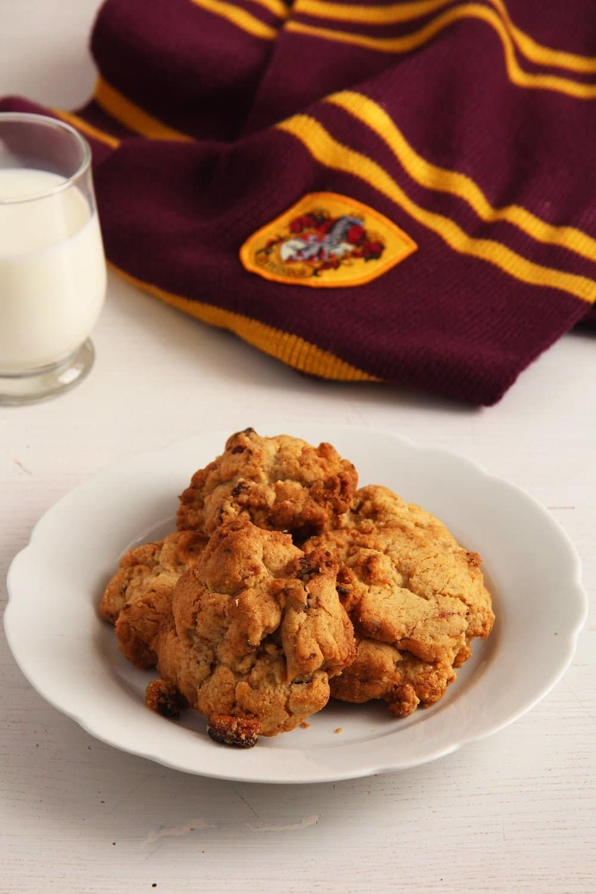

Hagrid's Rock Cakes

Hagrid had one hell of a sweet tooth.
A rock cake or a rock bun is a traditional
British cookie, a cookie so easy to make
even a 5-year-old could make it.
Ingredients
Produce
- 4 1/3 oz 125 g chopped dried fruit
Refrigerated
Baking & Spices
- 8 1/8 oz 230 g all-purpose flour
- 1 tsp Allspice, ground
- 1 1/4 tsp Baking powder
- 100 g Muscovado sugar
- 1 pinch Nutmeg
- 1 pinch Salt
Dairy
- 4 1/4 oz 120 g unsalted butter, unsalted
Instructions
- Preheat the oven to 180 degrees Celsius/ 350 degrees Fahrenheit. Line a baking tray with parchment paper.
- Mix the flour, sugar, baking powder, allspice, salt, and nutmeg. Add the soft butter and rub it into the flour with your hands until the mixture resembles fine breadcrumbs.
- Chop the larger dried fruit, if using. Sultanas, raisins or cranberries can be left whole.
- Combine: Beat the egg lightly in a small bowl. Stir the chopped fruit and egg into the flour-butter mixture with your hand or a spoon.
- Divide the dough into 10 heaps and place the heaps on the prepared baking tray. You should not try to give them a nice shape, leave them rough so that they can resemble rocks in the end.
- Bake for about 18-20 minutes or until golden brown. Leave to cool on the baking tray for about 10 minutes, then transfer to a wire rack to cool completely. Store airtight.
I hope you enjoy!